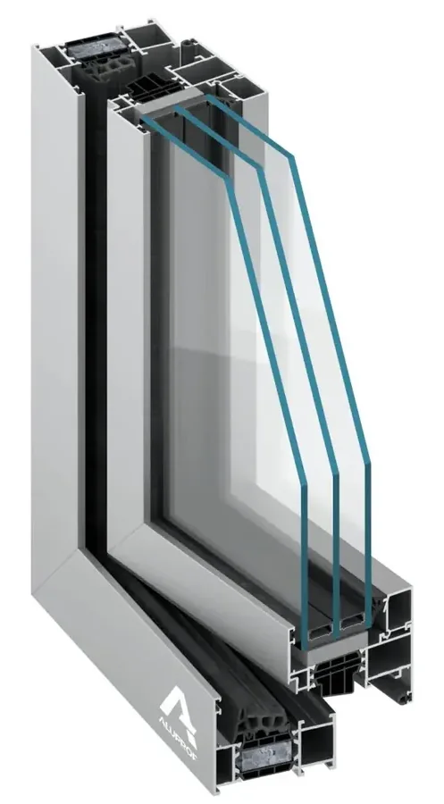
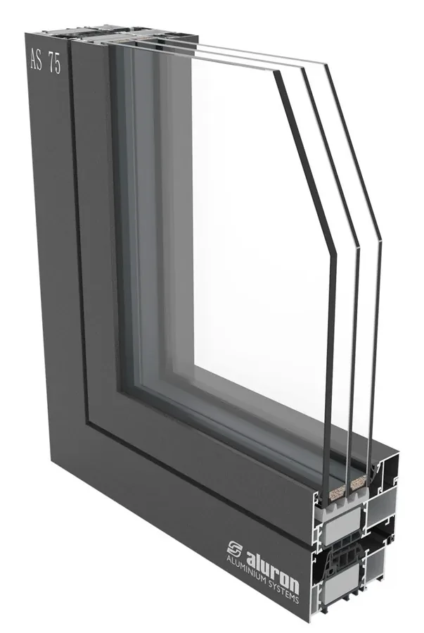

Opis produktu
Szukasz stolarki okiennej, która połączy bezkompromisową wytrzymałość z minimalistycznym designem? Wybierz okna aluminiowe – rozwiązanie stworzone z myślą o nowoczesnej architekturze, domach energooszczędnych oraz spektakularnych wielkogabarytowych przeszkleniach. Zapomnij o ograniczeniach konstrukcyjnych i postaw na profile, które przetrwają próbę czasu.
Dzięki plastyczności aluminium oraz zaawansowanym systemom technologicznym realizujemy nawet najbardziej śmiałe wizje architektoniczne:
- Wielkie systemy przesuwne (HS): efektowne, bezprogowe wyjścia na taras, które płynnie łączą salon z ogrodem.
- Nowoczesne domy i rezydencje: przeszklenia narożne, fasady szklane oraz okna z ukrytym skrzydłem, nadające bryle budynku lekkości.
- Konstrukcje nietypowe: okna o niestandardowych gabarytach i kształtach dopasowane do indywidualnych projektów.
W naszej ofercie znajdziesz konstrukcje oparte na flagowych, sprawdzonych systemach Aluprof, Aluron oraz Procural (dawne Ponzio), które gwarantują najwyższą jakość technologiczną i design na światowym poziomie.

Aluprof MB-79N
Aluprof MB-79N to ekonomiczny system okienno-drzwiowy o podwyższonych wymaganiach izolacyjności termicznej. Służy on do wykonywania konstrukcji, wśród których znajdują się okna stałe, rozwierne, uchylne, uchylno-rozwierane, uchylno-przesuwne, a także drzwi zewnętrzne jedno- i dwuskrzydłowe oraz rozwiązania witrynowe z drzwiami.

Aluron AS 75
Trzykomorowy system AS 75 przeznaczony do produkcji izolowanych termicznie konstrukcji okien i drzwi z zastosowaniem innowacyjnej technologii ANTI-BI-METAL, która zapobiega odkształcaniu się skrzydeł drzwiowych podczas nagrzania promieniami słonecznymi, jak i również przy bardzo niskich temperaturach. System spełnia wymagania wszystkich aktualnych i przyszłych norm izolacji termicznej.